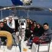

U terminu od 15. do 28. ožujka u Centru su se izmijenile tri grupe studenata. Prva je grupa na Visu boravila prvoga tjedna, kada su održana predavanja na kolegijima Govorničke vještine (dr. sc. Ozana Ramljak) i Odnosi s javnošću(doc. dr. sc. Ivan Tanta). Studenti su tijekom svog boravka posjetili i predstavnike gradske uprave s kojima su razgovarali o razvoju otoka, a organizirali su i okrugli stol na temu odnosa s javnošću.
Za svaku je grupu bio organiziran i prigodni program izvannastavnih aktivnosti koji se sastojao od jedrenja, vožnje kayaka te obilaska military rute.
Za treću grupu studenata održana su predavanja na kolegijima Inovativnost poduzeća (mr. sc. Gordana Ćorić) i Upravljanje projektima (Karolina Horvatinčić, MBA), a gostujuća predavanja u Centru su im održali Toni Bunčić (Poljoprivredna zadruga Podšpilje i Poljoprivredni obrt Poje), gosti iz udruge SVIMA, Pino Vojković (turistička agencija Alternatura), Damir Radica (PTO Bakhus), predstavnik proizvođača vina Roki's te Učenićka zadruga ISSA.